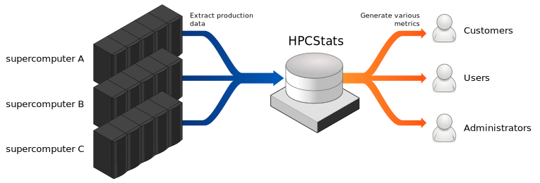

Introduction¶
HPCStats is a software to help generate statistics about the usage of HPC supercomputers. It is free and open source software licensed under the GPLv2.
It imports incrementally data from various sources (job schedulers, user directories, etc) to build a coherent PostgreSQL database with all the information. Then, this database can be interrogated to extract usefull statistics about users, jobs and supercomputer availability.
This diagrams illustrates global principles of HPCStats:
All details about HPCStats internals and all its components can be found in Architecture documentation section.